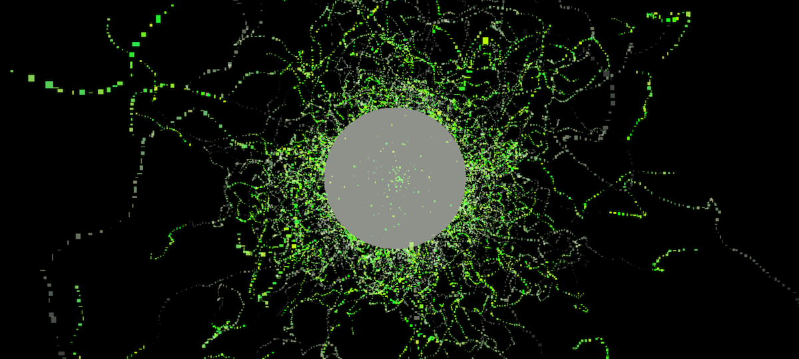

This work is licensed under a Creative Commons Attribution-NonCommercial 4.0 International License.
This week we are going to review Creative Commons licenses and how to add images to your website in accordance with license permissions. You will also begin work on your first assignment, which is due Friday 28 October by 5 pm.
Remember that all of these tutorials are designed so the source code implements what is presented. Make sure to view the source code of all tutorial pages to view how different techniques are implemented.
Last week we covered:
As noted in this week's lecture, the Creative Commons offers licenses for copyright governed works. It was founded in 2001 by Professor Lawrence Lessig of Harvard Law School.
Important concepts:
There are six types of Creative Commons Licenses that offer different levels of permissions in relation to these concepts. We will review this licenses as they relate to images and other media. For best practice on attributing sources, refer to the Creative Commons Website or Creative Commons Wiki.
Make sure to check license for permissions before adding to your site and ensure to comply with these permissions.
Image: Still of Firefly Burnout by EL Putnam, ©2021 All Rights Reserved
Using what we learned in class and in the labs, make a simple html page. For a refresher on basic page set up refer to this tutorial from W3 Schools on HTML basics.
Assessment criteria:
Upload your html page to Moodle by Friday 28 October by 5 pm. If you referencing images using relative links, make sure to include images as well.
Late submission will be penalised.
We will be working on the pages within class until the assignment is due. If you want to work on your page outside of class, you can use a simple text editor for HTML documents (TextEdit on a Mac or Notepad on a PC) or download VSCode on your home computer for free. You can save your assignment to a USB drive or upload to OneDrive in order to access it outside of class. In general, it is recommended that you back up all your work to OneDrive, since files may not be saved correctly on MacLab computers. You are also welcome to bring your own laptop to class if you prefer to use that.
Image: Pillars of Creation by NASA, ESA, CSA, STScI; Joseph DePasquale (STScI), Anton M. Koekemoer (STScI), Alyssa Pagan (STScI) is in the Public Domain.
This work is licensed under a Creative Commons Attribution-NonCommercial 4.0 International License.